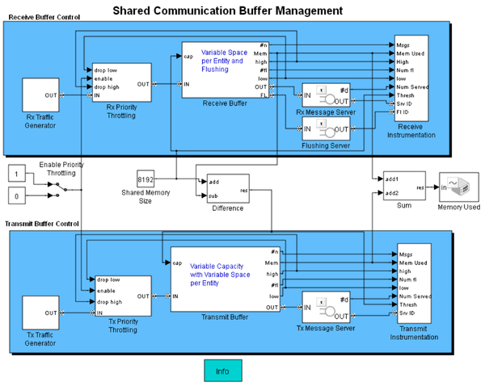
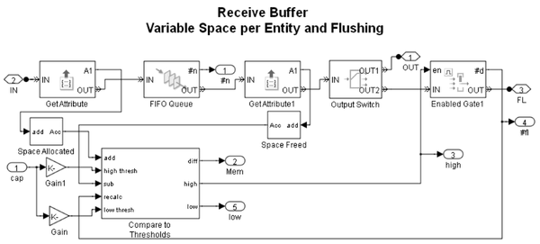
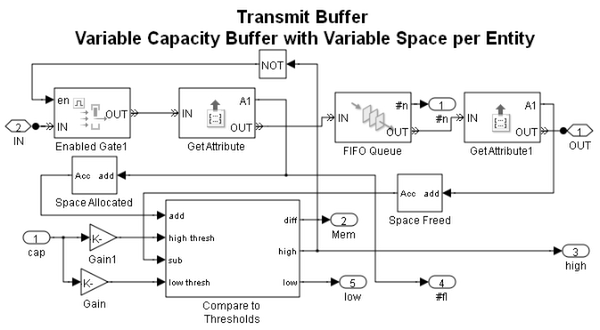
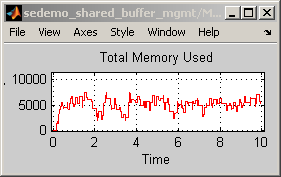
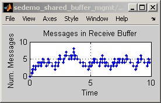
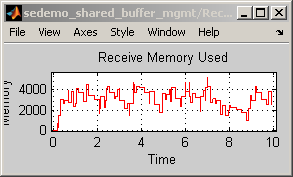
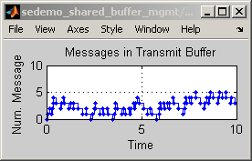
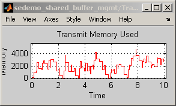
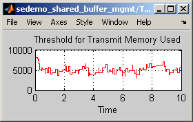

Shared Communication Buffer Management
Contents
Overview
This model illustrates the modeling of a buffer shared between the transmit and receive buffering functions in a low-cost device for efficient use of memory.
Structure of the Model
The upper part of the model describes a receive buffer, where messages arrive from an I/O device such as a UART (Universal Asynchronous Receiver Transmitter) chip. The lower part of the model describes a transmit buffer, where messages arrive over the computer bus that connects to the rest of the components of the computer, such as the CPU or DMA (Direct Memory Access) controller. Each of the parts models these processes:
- Generation of messages, or traffic
- Throttling, or regulation, of the messages that can be stored in the buffer
- Storage of the data from the messages in a buffer
- Service of messages for a time interval
Throttling of Messages
The Rx Priority Throttling subsystem drops some messages based on their priority, threshold values that you set in the dialog box of the Receive Buffer subsystem, and the amount of available memory in the buffer.
When the traffic load increases the high priority messages are preferred and the lower priority messages are more likely to be dropped. The messages that are not dropped advance to the Receive Buffer subsystem. A similar throttling mechanism is implemented in the Tx Priority Throttling subsystem.
Receive Buffer
The Receive Buffer is modeled with variable space per entity and flushing capabilities. This subsystem uses the Space attribute of each message to model the buffering of variable-sized messages. The subsystem flushes the oldest message upon reaching the high threshold. This flushing capability models the behavior of a ring buffer.
The key components of the subsystem are:
- The input signal 'cap' that sets the maximum capacity of the buffer. This remains constant during simulation.
- The FIFO Queue block, which stores messages
- The Enabled Gate block, which regulates the flushing of older messages when the queue reaches the high threshold
- The Space Allocated and Space Freed subsystems, which compute the cumulative memory of messages that have entered and exited the queue throughout the simulation
- The Compare to Thresholds subsystem, which computes the amount of memory currently in use and determines whether the queue has crossed the high-priority threshold or the low-priority threshold
Transmit Buffer
The Transmit Buffer subsystem is similar to the Receive Buffer subsystem, except that the Transmit Buffer subsystem doesn't flush older messages. Instead, it forbids the entry of the new messages from CPU or DMA controller when full. The capacity of this buffer is represented by the input signal to the port 'cap'. Its value varies throughout the simulation depending on how much memory is left unused by the Receive Buffer. That is, the receive and transmit buffers share memory and the receive buffer has preference.
The key differences between the Transmit Buffer and Receive Buffer subsystems are:
- The capacity of Receive Buffer subsystem is constant throughout the simulation whereas that of the Transmit Buffer subsystem varies throughout the simulation.
- Upon reaching its capacity, the Enabled Gate block in the Receive Buffer system flushes older messages whereas in the Transmit Buffer subsystem, the Enabled Gate block prevents any new messages from entering the subsystem.
Delays in Managing Messages
The block labeled Rx Message Server models the delay in forwarding messages over the I/O bus that connects to the CPU or DMA controller. The block labeled Flushing Server models the delay in flushing messages. These server blocks let you see how the buffer behaves if managing messages takes significant time compared to the message inter-arrival time.
The block labeled Tx Message Server models the delay in transmitting messages.
Results and Displays
The model includes these visual ways to understand its performance:
- Number of messages in the receive buffer and transmit buffer as shown in plot Messages in Receive Buffer.
- Amount of memory used in the receive buffer and transmit buffer as shown in plots Receive Memory Used and Transmit Memory Used respectively.
- Total memory used by both the receive buffer and transmit buffer as shown in plot Memory Used.
- Threshold for transmit memory used, which is the memory available for transmitting messages as shown in plot Transmit Memory.
The Receive Instrumentation and Transmit Instrumentation subsystems also contain additional scope blocks whose plots you can display by double-clicking the blocks.
     Experimenting with the Model
- You can modify the Constant value parameter in the Shared Memory Size block to change the size of the shared buffer.
- You can turn off priority throttling by changing the setting of the Enable Priority Throttling block. Without priority throttling, the memory used can exceed the available memory, which causes memory corruption. Priority throttling ensures that the memory used does not exceed the available memory.
- You can change the thresholds that affect the dropping and flushing of messages at the receiver, by changing the Low threshold or High threshold parameter of the Receive Buffer subsystem. The high-priority threshold also affects the flushing of messages that wait too long in the Receive Buffer subsystem. Each threshold value is a real number between 0 and 1.
- You can change the thresholds that affect the dropping of messages at the transmitter, by changing the Low threshold or High threshold parameter of the Transmit Buffer subsystem. Each threshold value is a real number between 0 and 1.